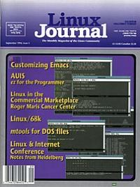

Shutdown Archive web server
Search:
Linux Journal
Issue #5/September 1994

Features
Emacs: Friend or Foe
by Matt Welsh
Lots of features make Emacs an attractive alternative to vi. Customizing makes Emacs perform the way you want
Interview with James MacLean
by Michael K. Johnson
DOSEMU team coordinator talks about DOSEMU challenges and solutions.
ez for the Programmer
by Terry Gliedt
Using ez as a source view editor.
Linux in the Trenches
by G.W. Wettstein, Ph.D.
Linux: Rx for the Roger Maris Cancer Center
News & Articles
Linux on the Motorola 680X0
by Hamish Macdonald
Dialog: An Introductory Tutorial
by Jeff Tranter
Writing and Intelligient Serial Driver
by Randolph Bentson
Using iBCS2 under Linux
by Eric Youngdale
Linux Events
Two Views on Heidelberg
Linux Programming Hints
by Michael K. Johnson
Reviews
Book Review
The Whole Internet User's Guide and Catalog
by Putnam Barber
Columns
Letters to the Editor
New Products
Linux System Administration
by Mark Komarinski
Archive Index
Shutdown Archive web server
Search:
Copyright © 1994 - 2018
Linux Journal
. All rights reserved.